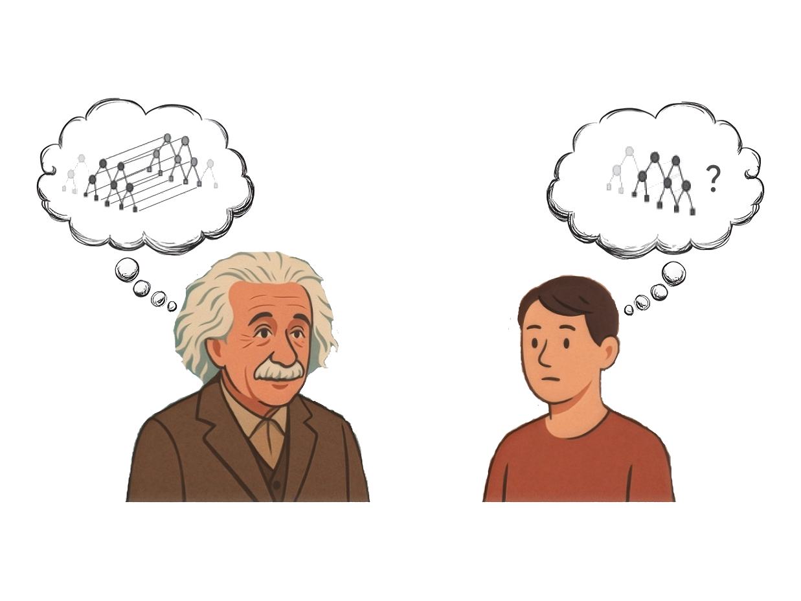
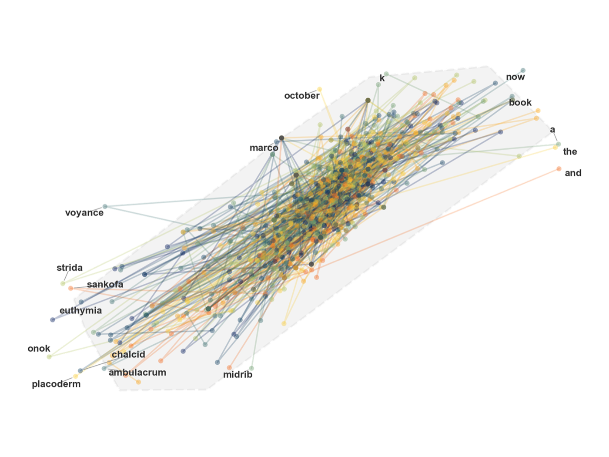
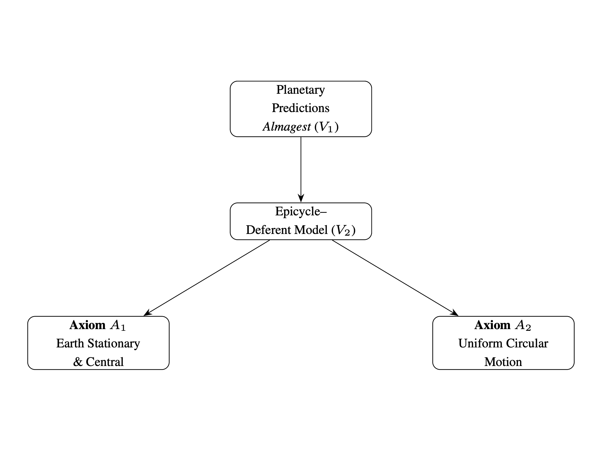

Samuel Schapiro
I'm an interdisciplinary scientist and entrepreneur studying the science of intelligence and creativity, affiliated with the Knowledge Lab at the University of Chicago and the AI Innovation Institute (AI3) at Stony Brook University, and closely collaborating with the Department of Psychology at Pennsylvania State University. I am also currently a research scientist at a stealth startup.
My work has been featured in scientific venues such as NeurIPS, ICML, COLM, ICLR, and ICCC and bridges cognitive science, computer science, and the philosophy of science to advance our understanding of creativity, our ability to elicit it in intelligent machines, and its applications towards scientific, industrial, and artistic domains. My work has been recognized with various accolades, including Best Short Paper Award at ICCC 2025, an Oral talk at the Scientific Understanding of Foundation Models Workshop at COLM 2026, and an invited chapter in the Cambridge Handbook of Creativity (3rd Ed.).
Email / Google Scholar / GitHub / LinkedIn / Bookshelf
Research
My research seeks to advance our understanding of creativity in humans and intelligent machines: how we can measure it, how we can elicit it in AI systems, and what it fundamentally is. This work is organized around three interrelated areas:

Measuring Creativity in Humans and AI Click to explore →Benchmarks and tests of creativity, especially more complex forms such as transformational and scientific creativity.

Improving the Creativity of AI Click to explore →Methods and systems that make models more creative, from steering model weights to scientific idea generation.

Theories and Foundations of Creativity Click to explore →Formal accounts of what creativity is and how it manifests in minds and machines.
Publications
For a complete list, see my Google Scholar.
I. Measuring Creativity in Humans and AI
-
 [NeurIPS 2026] Do Semantic Distance Tests Actually Predict Creativity in Large Language Models? Also at the ICML 2026 Workshop on Generative AI & Creativity paper
[NeurIPS 2026] Do Semantic Distance Tests Actually Predict Creativity in Large Language Models? Also at the ICML 2026 Workshop on Generative AI & Creativity paper -
 [COLM 2026 Workshop] TwistBench: Benchmarking Transformational Creativity in LLMs via Literary Plot Twists Oral, Workshop on Scientific Understanding of Foundation Models paper / slides
[COLM 2026 Workshop] TwistBench: Benchmarking Transformational Creativity in LLMs via Literary Plot Twists Oral, Workshop on Scientific Understanding of Foundation Models paper / slides -

-

II. Improving the Creativity of AI
-
 [COLM 2026] CreativityNeuro: Steering Language Model Weights to Improve Divergent Thinking and Reduce Mode Collapse Also at the ICML 2026 Workshop on Generative AI & Creativity arXiv
[COLM 2026] CreativityNeuro: Steering Language Model Weights to Improve Divergent Thinking and Reduce Mode Collapse Also at the ICML 2026 Workshop on Generative AI & Creativity arXiv -

III. Theories and Foundations of Creativity
-

-
 [Cambridge Handbook of Creativity] Artificial Creative Intelligence Invited chapter, 3rd ed., Cambridge University Press. Eds. J. C. Kaufman & R. J. Sternberg. In preparation.
[Cambridge Handbook of Creativity] Artificial Creative Intelligence Invited chapter, 3rd ed., Cambridge University Press. Eds. J. C. Kaufman & R. J. Sternberg. In preparation.
Service
Conference Reviewer: ICLR 2027, ICML 2026, COLM 2026, NeurIPS 2026, AAAI 2026
Journal Reviewer: Proceedings of the National Academy of Sciences (PNAS)
Workshop Reviewer: NeurIPS 2024 Creativity & Generative AI, ICML 2026 Creativity & Generative AI